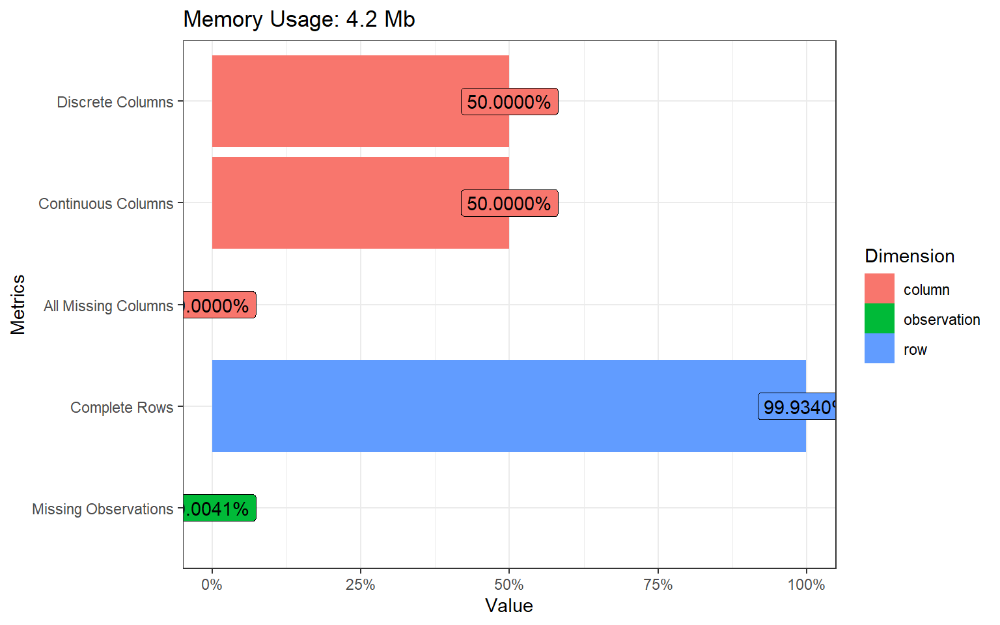
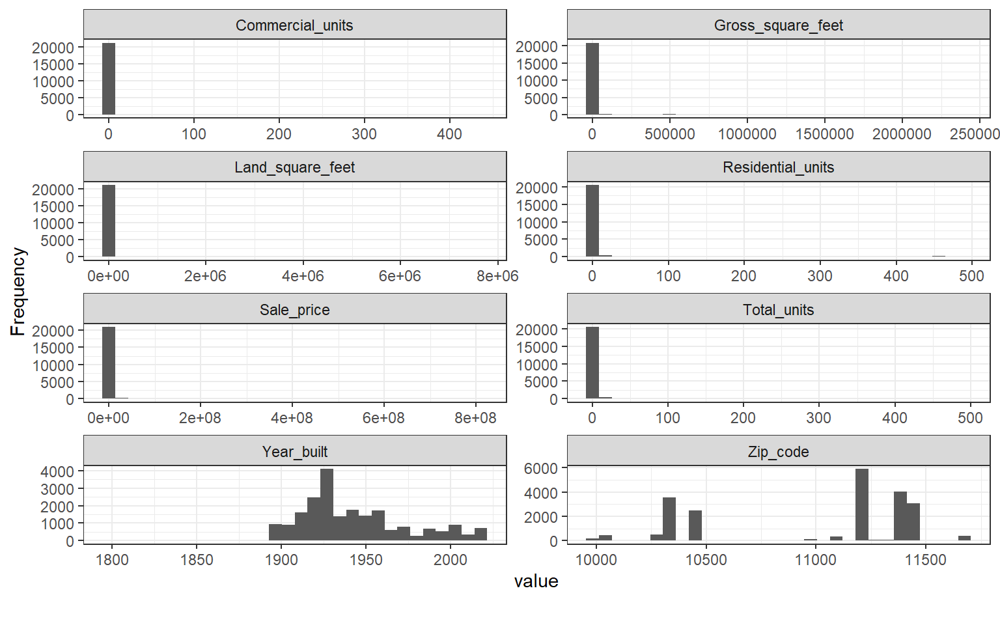
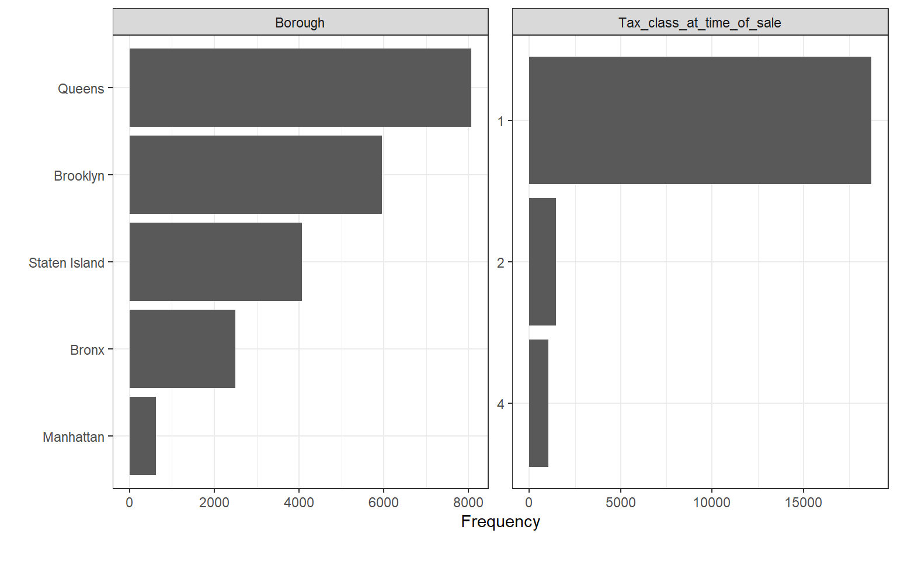
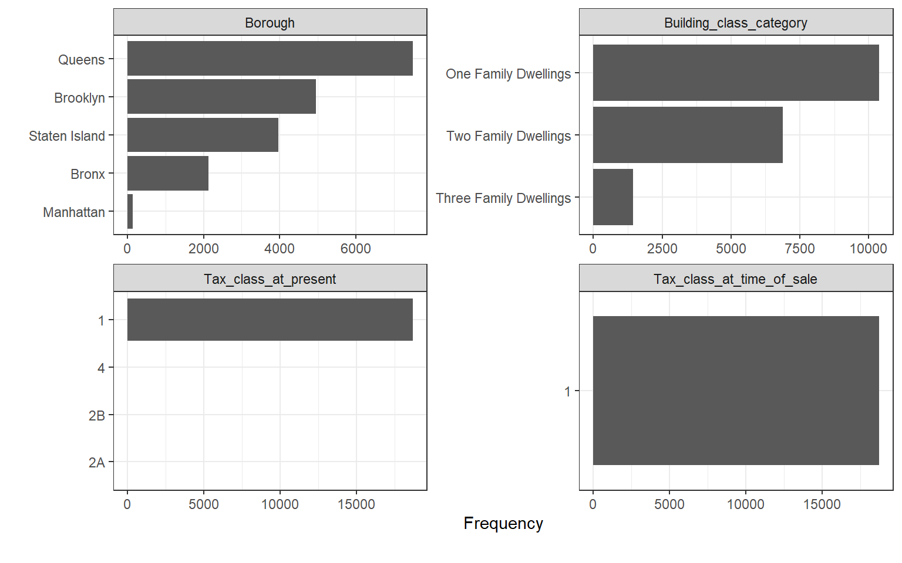
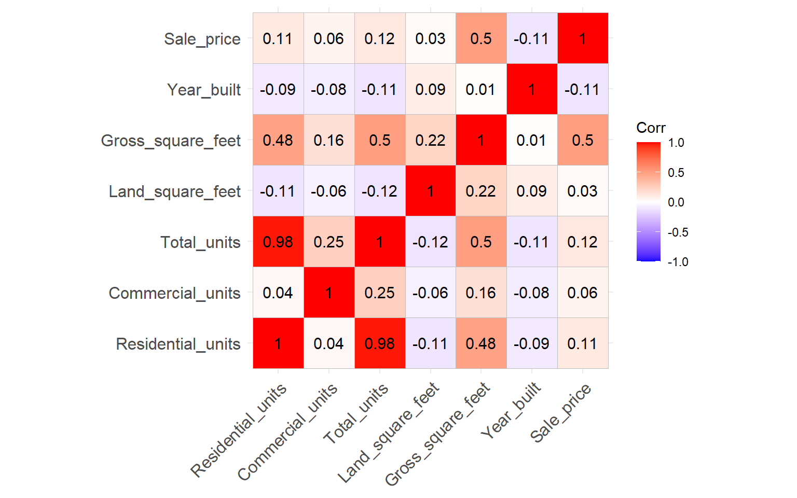
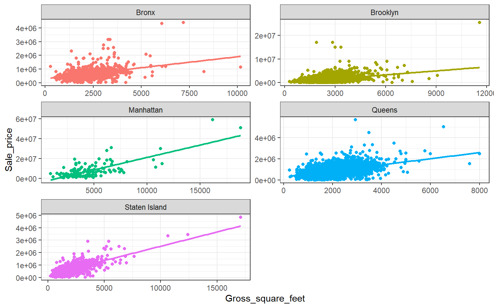

New York city is known to be one of the most expensive cities in the world when it comes to real estate. The city has 5 different boroughs, with each having its unique socioeconomic profile that helps determine the real estate prices.
Using data shared by the New York City department of Finance, this project looks to analyze housing costs for the last 12 months and use regression models to predict prices based on indicators.
The data is found in 4 distinct excel files. Read them to the environment and merge them in a single dataframe, making it easier to handle.
#The boroughs are coded (manhattan=1, bronx=2, brooklyn=3, queens=4, staten=5)
nyc<-bind_rows(manhattan,bronx,brooklyn,queens,staten)
#Recode the boroughs
nyc<-nyc%>%
mutate(
BOROUGH=case_when(
BOROUGH=="1" ~ "Manhattan",
BOROUGH=="2" ~ "Bronx",
BOROUGH=="3" ~ "Brooklyn",
BOROUGH=="4" ~ "Queens",
BOROUGH=="5" ~ "Staten Island"
)
)
#remove the individual dataframes
rm(bronx, brooklyn, manhattan, queens, staten)
#Normalize the column names (lower column names and remove space)
colnames(nyc)<-str_to_lower(colnames(nyc))%>%
str_replace_all("\\s", "_")%>%
str_to_title(colnames(nyc))## Warning in opts["locale"] <- locale: number of items to replace is not a
## multiple of replacement length#some of the properties were exchanged between family members (i.e. filter with a threshold of 10,000$)
summary(nyc$Sale_price)## Min. 1st Qu. Median Mean 3rd Qu. Max.
## 0 0 470000 1184058 880000 809912583nyc<-nyc%>%
filter(Sale_price>10000)
#Some properties have square footage of 0, which is unlikely in reality. Remove
summary(nyc$Gross_square_feet)## Min. 1st Qu. Median Mean 3rd Qu. Max. NA's
## 0 1300 1791 7190 2544 2400000 22601nyc<-nyc%>%
filter(Gross_square_feet>0)
#Initial removal of variables that are not of interest
nyc<-nyc%>%
dplyr::select(-5,-6,-7,-8,-10)The initial data cleaning and manipulation helps set the data up ready for exploration and followed by analysis i.e. removing missing observations and exploring the data.
plot_intro(nyc, ggtheme = theme_bw())
sum(is.na(nyc$Year_built))## [1] 14nyc<-nyc%>%
drop_na(Year_built)
table(nyc$Borough)##
## Bronx Brooklyn Manhattan Queens Staten Island
## 2491 5960 616 8066 4067#Plot continuous and discrete values
plot_histogram(nyc, ggtheme = theme_bw(), ncol = 2)
plot_bar(nyc, maxcat = 5,
ggtheme = theme_bw())
#Keep only family dwellings only
nyc<-nyc%>%
filter(Building_class_category=="01 ONE FAMILY DWELLINGS" | Building_class_category=="02 TWO FAMILY DWELLINGS" | Building_class_category=="03 THREE FAMILY DWELLINGS")%>%
mutate(Building_class_category=
case_when(
Building_class_category=="01 ONE FAMILY DWELLINGS" ~ "One Family Dwellings",
Building_class_category=="02 TWO FAMILY DWELLINGS" ~ "Two Family Dwellings",
Building_class_category=="03 THREE FAMILY DWELLINGS" ~ "Three Family Dwellings"
)
)
table(nyc$Borough)##
## Bronx Brooklyn Manhattan Queens Staten Island
## 2123 4961 148 7499 3965plot_bar(nyc, maxcat = 5,
ncol = 2,
ggtheme = theme_bw()) Very few missing observations (14), and they seem to be from the Year Built column. We can go ahead and remove them since they make up just 0.04% of the data.
You can also observe that most variables have very huge outliers that skew their charts positively. Going forward, we might need to deal with the outliers. One potential way is by keeping just residential dwellings (building codes can be found here). Manhattan will see a considerable drop in observations (76%) while the least drop in observations was for Staten Island (2%).
#Residential Units
quartiles <- quantile(nyc$Residential_units)
# 75% minus 25% = interquartile range
iqr <- quartiles[[4]] - quartiles[[2]]
# Outlier boundaries
lower_bound <- quartiles[[2]] - (1.5 * iqr)
upper_bound <- quartiles[[4]] + (1.5 * iqr)
# Isolate outlier(s)
res.outliers <- nyc%>%
filter(Residential_units > upper_bound | Residential_units< lower_bound)
#Land
quartiles <- quantile(nyc$Land_square_feet)
iqr <- quartiles[[4]] - quartiles[[2]]
lower_bound <- quartiles[[2]] - (1.5 * iqr)
upper_bound <- quartiles[[4]] + (1.5 * iqr)
land.outliers <- nyc%>%
filter(Land_square_feet > upper_bound | Land_square_feet< lower_bound)
#Price
quartiles <- quantile(nyc$Sale_price)
iqr <- quartiles[[4]] - quartiles[[2]]
lower_bound <- quartiles[[2]] - (1.5 * iqr)
upper_bound <- quartiles[[4]] + (1.5 * iqr)
price.outliers <- nyc%>%
filter(Borough=="Bronx")%>%
filter(Sale_price > upper_bound | Sale_price< lower_bound)
#Bronx has two duplicate outliers, remove them
nyc<-nyc%>%
filter(Sale_price!=87400000)
#remove duplicates
nyc<-nyc%>%
distinct()To successfully model real estate prices we must select the best predictor variables (independent variables) that will best explain the prices.
As OLS assumes no multicollinearity between independent variables, a correlation matrix helps us identify variables that are strongly correlated and thus removable. In our case, Total Units is highly correlated with Residential units and mildly correlated with Gross Square Feet. We therefore remove Total Units from the equation.
#Recode columns to proper data types
nyc<-nyc%>%
mutate(Borough=as.factor(Borough),
Neighborhood=as.factor(Neighborhood),
Tax_class_at_time_of_sale=as.factor(Tax_class_at_time_of_sale),
Zip_code=as.factor(Zip_code),
Building_class_at_time_of_sale=as.factor(Building_class_at_time_of_sale),
Building_class_category=as.factor(Building_class_category))
nyc$Address<-NULL
nyc$Neighborhood<-NULL
nyc$Zip_code<-NULL
nyc$Tax_class_at_present<-NULL
#Check for multicollinearity
numnyc <- names(which(sapply(nyc, is.numeric)))
corr <- cor(nyc[,numnyc], use = 'pairwise.complete.obs')
p3<-ggcorrplot(corr, lab = TRUE)
p3
#Total units has strong relationship with Residential units, so i shall remove it
nyc$Total_units<-NULL
#Visualize relationship between sale price and gross size
nyc%>%ggplot(aes(x=Gross_square_feet, y=Sale_price, color=Borough))+
geom_point()+
theme_bw()+
geom_smooth(method = "lm", se = FALSE)+
theme(legend.position = "none")+
facet_wrap(~Borough, ncol = 2, scales = "free")## `geom_smooth()` using formula 'y ~ x'
It is important to model each borough individually as they are different in terms of socio-economic profile. It is logical that each borough would have its own price drivers. We can do this using nesting techniques.
Taking an overall regression for the full dataset, we see the model helps explain 43% of the observations significantly. As mentioned earlier, it would be wise to seperate observations by Borough and run seperate models for each Borough.
#Regression with two most important factors, Borough and gross size of property
nyc_fit<-lm(Sale_price~Borough+Gross_square_feet, data=nyc)
summ(nyc_fit)| Observations | 18694 |
| Dependent variable | Sale_price |
| Type | OLS linear regression |
| F(5,18688) | 2821.81 |
| R² | 0.43 |
| Adj. R² | 0.43 |
| Est. | S.E. | t val. | p | |
|---|---|---|---|---|
| (Intercept) | -420293.81 | 25003.92 | -16.81 | 0.00 |
| BoroughBrooklyn | 536145.35 | 22267.41 | 24.08 | 0.00 |
| BoroughManhattan | 5627046.36 | 75272.96 | 74.76 | 0.00 |
| BoroughQueens | 348373.75 | 21333.20 | 16.33 | 0.00 |
| BoroughStaten Island | 173173.65 | 23286.41 | 7.44 | 0.00 |
| Gross_square_feet | 502.60 | 7.89 | 63.71 | 0.00 |
| Standard errors: OLS |
#Best model by Borough (Generate multiple linear models)
##First nest data by the category
nyc_nest<-nyc%>%
group_by(Borough)%>%
nest()
##Second run a liner regression across all categories, using a mapping function
nyc_nest<-nyc_nest%>%
mutate(linear_model=map(.x= data,
.f= ~lm(Sale_price~+Gross_square_feet, data=.)
))
##Third select the broom function suitable
#a) Tidy the data
nyc_nest<-nyc_nest%>%
mutate(tidy_coef=map(.x=linear_model,
.f=tidy, conf.int=TRUE))
#Fourth we Unnest
p_borough<-nyc_nest%>%
dplyr::select(Borough, tidy_coef)%>%
unnest(cols = tidy_coef)%>%
filter(term=="Gross_square_feet")%>%
arrange(estimate)
panderOptions('table.split.table', 300)
pander(p_borough, round=3, caption="<b>Change in Real Estate prices per increase in square foot by Borough</b>")| Borough | term | estimate | std.error | statistic | p.value | conf.low | conf.high |
|---|---|---|---|---|---|---|---|
| Bronx | Gross_square_feet | 160.2 | 6.94 | 23.09 | 0 | 146.6 | 173.8 |
| Staten Island | Gross_square_feet | 229.3 | 3.512 | 65.3 | 0 | 222.4 | 236.2 |
| Queens | Gross_square_feet | 288.2 | 5.138 | 56.08 | 0 | 278.1 | 298.3 |
| Brooklyn | Gross_square_feet | 557.7 | 16.38 | 34.06 | 0 | 525.6 | 589.8 |
| Manhattan | Gross_square_feet | 2499 | 180.6 | 13.84 | 0 | 2142 | 2856 |
#a) glance the data (this has r-squared)
nyc_nest<-nyc_nest%>%
mutate(glance_coef=map(.x=linear_model,
.f=glance))
#we Unnest
r_borough<-nyc_nest%>%
dplyr::select(Borough, glance_coef)%>%
unnest(cols = glance_coef)%>%
dplyr::select(r.squared, adj.r.squared, p.value, AIC, BIC)%>%
arrange(r.squared)
panderOptions('table.split.table', 300)
pander(r_borough, round=3, caption="<b>How well Real Estate prices can be explained by the model for each Borough</b>")| Borough | r.squared | adj.r.squared | p.value | AIC | BIC |
|---|---|---|---|---|---|
| Brooklyn | 0.19 | 0.189 | 0 | 151233 | 151253 |
| Bronx | 0.201 | 0.201 | 0 | 58880 | 58897 |
| Queens | 0.296 | 0.295 | 0 | 210044 | 210065 |
| Staten Island | 0.518 | 0.518 | 0 | 107161 | 107179 |
| Manhattan | 0.567 | 0.564 | 0 | 5002 | 5011 |
Not surprising that Manhattan has the highest increase in real estate price for each increase square foot of the property. Bronx has the smallest increase. Manhattan also has the best model fit, meaning 56% of the observation prices can be explained by the model. While for Brooklyn it is just 19% of the observations. This means there might be other price drives that we did not catch in our dataset.